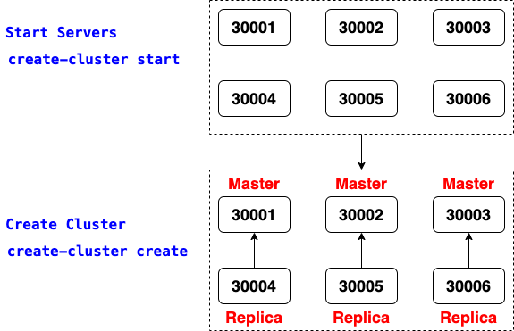
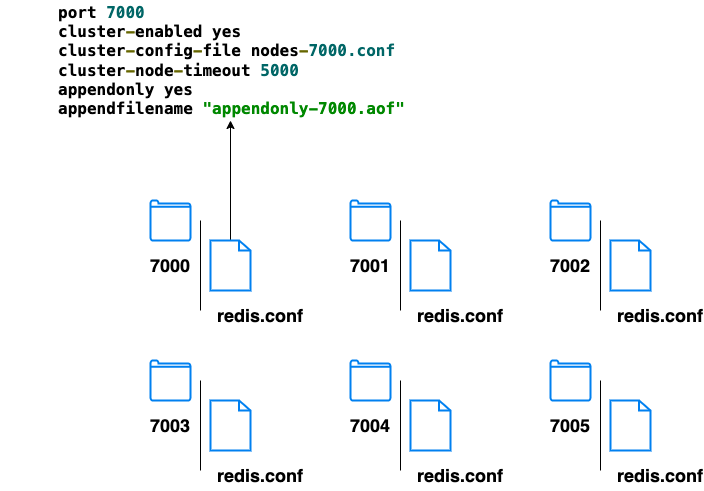
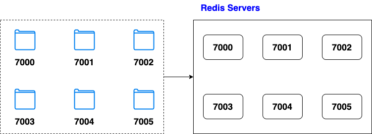
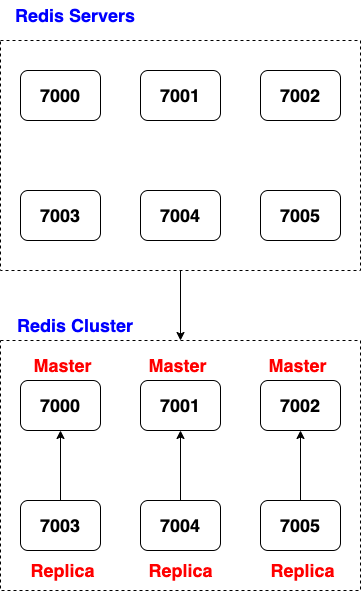

# download Redis
http://download.redis.io/
# uncompress
tar -xvf redis-stable.tar.gz
# enter Redis folder
# compile
make

# start six redis servers
./utils/create-cluster/create-cluster start
# create a cluster with the started six redis servers
# three master node, each of them has one replica node
./utils/create-cluster/create-cluster create
# stop a redis cluster
# remove .log, .aof, .rdb, and .conf
./utils/create-cluster/create-cluster stop

# redis.conf
port 7000
cluster-enabled yes
cluster-config-file nodes-7000.conf
cluster-node-timeout 5000
appendonly yes
appendfilename "appendonly-7000.aof"

redis-server ./redis.conf

redis-cli --cluster create 127.0.0.1:7000 127.0.0.1:7001 \
127.0.0.1:7002 127.0.0.1:7003 127.0.0.1:7004 127.0.0.1:7005 \
--cluster-replicas 1
# list cluster nodes
ps -e | grep redis
# check masters, replicas, and their slots
redis-cli -p 30001 cluster nodes
cluster nodes # under redis-cli interactive environment
redis-cli --cluster check 127.0.0.1:30001
# access a node with cluster mode
redis-cli -c -p 30001 # redis-cli -p 300001, access a single node
# add a key-value pair to cluster
# use CRC16%16384 to decide which node to save a specific key-value pair
set k1 v1
# get the value of a key
# use CRC16%16384 to decide which node to get the value of a specific key
get k1
# check cluster node IDs
redis-cli --cluster check 127.0.0.1:30001
# move slots from one master node to another node master
redis-cli --cluster reshard 127.0.0.1:30002 --cluster-from [from_master_node_id] --cluster-to [to_master_node_id] --cluster-slots [number_of_slots] --cluster-yes
# create a server
# redis-server is under ./src folder
redis-server ./redis.conf
# add the server to be a master node to the cluster
# redis-cli --cluster add-node [add_server_ip:port] [running_server_ip:port]
redis-cli --cluster add-node 127.0.0.1:30009 127.0.0.1:30002
# add the server to be a replica node to the cluster
# redis-cli --cluster add-node [add_server_ip:port] [running_server_ip:port] --cluster-slave
redis-cli --cluster add-node 127.0.0.1:30009 127.0.0.1:30002 --cluster-slave
# add the server to be a replica node of a specific master node on the cluster
# redis-cli --cluster add-node [add_server_ip:port] [running_server_ip:port] --cluster-slave --cluster-master-id [master_node_id]
redis-cli --cluster add-node 127.0.0.1:7006 127.0.0.1:7000 --cluster-slave --cluster-master-id dffc6fece3ed956e82b2757ee0f2b1c9bc4af9ad
# manually failover a master node
# its replica will be changed to the master node
redis-cli -p 30001 debug segfault
# forget the node from the cluster
# otherwise, the node ID exists even the node has been removed
redis-cli -p 30002 cluster forget [removed_node_id]
# view running masters, failover master, and replicas
redis-cli -p 30002 cluster nodes
# list cluster nodes
redis-cli --cluster check 127.0.0.1:30002
ps -e | grep redis
# remove a node from the cluster, it will run as an independent server
redis-cli --cluster del-node 127.0.0.1:30002 [node_id]
# login a replica node
redis-cli -c -p 30006
cluster replicate [master_node_id]
# install redis-py-cluster
pip install redis-py-cluster
from rediscluster import RedisCluster
startup_nodes = [{"host": "127.0.0.1", "port": "30001"}, {"host": "127.0.0.1", "port": "30003"}]
rc = RedisCluster(startup_nodes=startup_nodes, decode_responses=True
rc.set("foo", "bar")